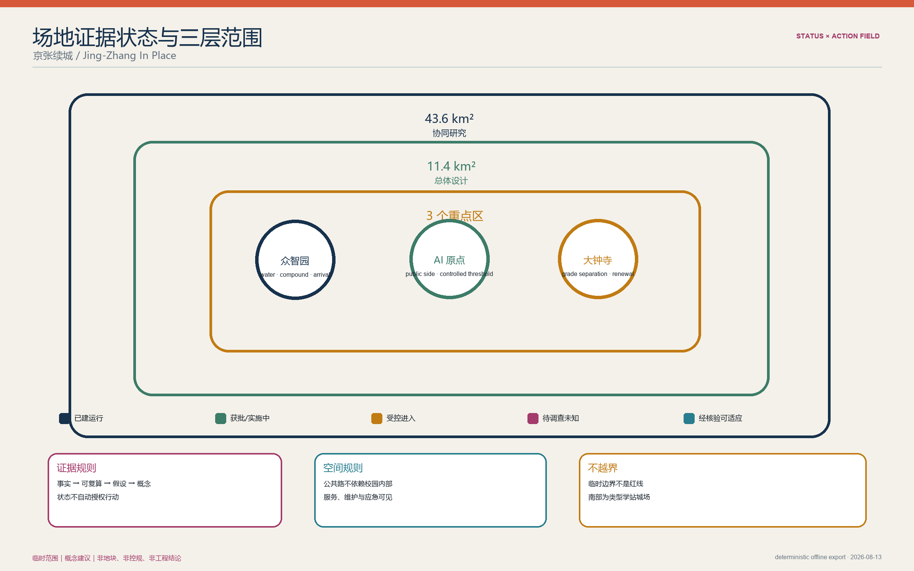
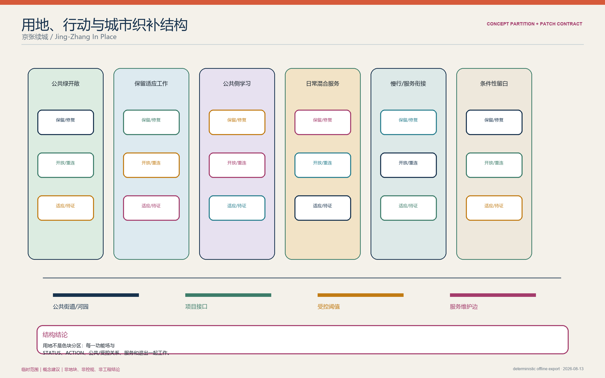
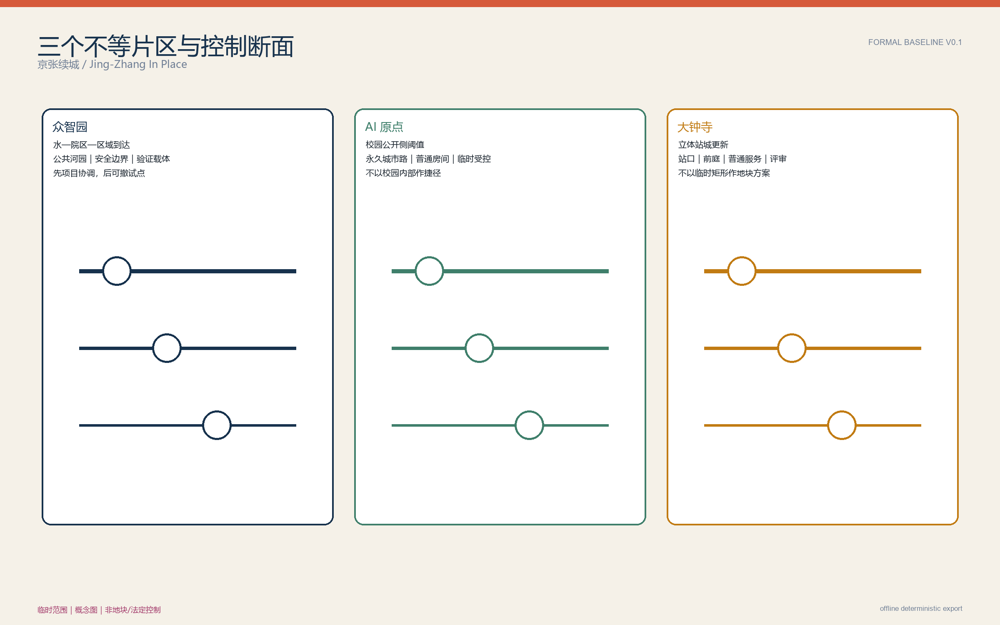
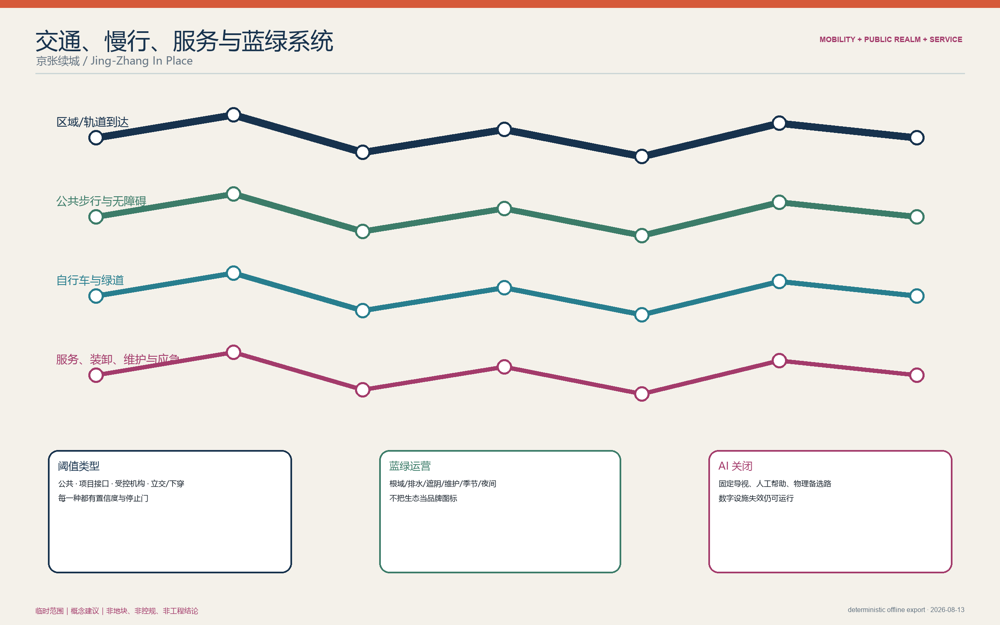
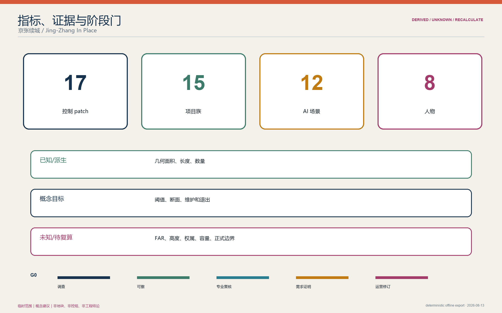

核心指标 · 任务覆盖 · 自检状态
总体设计临时范围 11,412,825.386 m²；概念绿地率 12.3423%；概念公共空间率 7.3281%。三项均只用于临时范围内的图数一致性检查，不是现状或法定指标。
本离线阅读壳覆盖：总览地图、三层范围、重点区域、用地分区、交通慢行、蓝绿公共空间、建筑、更新项目、AI 场景、来源与假设。当前自检状态：BASELINE / NOT READY FOR REVIEW。